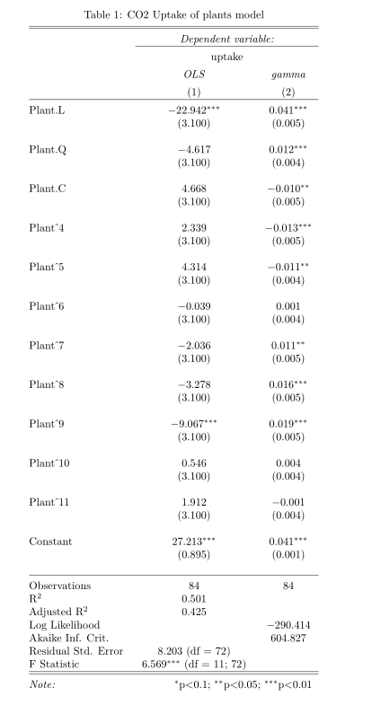
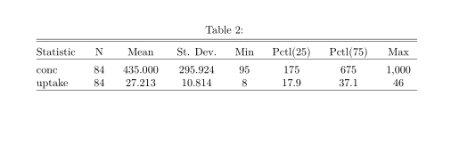

This post was inspired by the following youtube video.
Introduction
Tables from regression models or just plain data in R are poorly organized. The have little formatting and are unfit for publishing. This point is illustrated with the CO2 dataset. This dataset looks at the CO2 uptake of six different types of grass.
The solution is to use the Stargazer library. The stargazer library contains the stargazer function which does a lot of work for the user to create tables in Latex format. It can even compare multiple models in the same table.
library(stargazer)mdl2 <-glm(CO2$uptake ~ CO2$Plant, family = Gamma)stargazer(mdl, mdl2, title ="CO2 Uptake of plants model")
% Table created by stargazer v.5.2.3 by Marek Hlavac, Social Policy Institute. E-mail: marek.hlavac at gmail.com
% Date and time: Wed, Aug 03, 2022 - 8:06:23 AM
\begin{table}[!htbp] \centering
\caption{}
\label{}
\begin{tabular}{@{\extracolsep{5pt}}lccccc}
\\[-1.8ex]\hline
\hline \\[-1.8ex]
Statistic & \multicolumn{1}{c}{N} & \multicolumn{1}{c}{Mean} & \multicolumn{1}{c}{St. Dev.} & \multicolumn{1}{c}{Min} & \multicolumn{1}{c}{Max} \\
\hline \\[-1.8ex]
conc & 84 & 435.000 & 295.924 & 95 & 1,000 \\
uptake & 84 & 27.213 & 10.814 & 7.700 & 45.500 \\
\hline \\[-1.8ex]
\end{tabular}
\end{table}
The stargazer function will return a latex table by default which requires a latex compiler. This post is written in R markdown and knitted to a html without a latex compiler so I can not demonstrate it natively. You can however knit a RMD file to a pdf which will utilize a latex compiler. I’ve copied these images of the tables from such a pdf file.
 
It is important to note that when displaying a dataframe in stargazer, the function will default to a summary of results. This performance can be undone will the summary = FALSE as a parameter of the function.
With some basic understanding of the La-Tex language, you can understand what stargazer is providing. Its nothing fancy that you couldn’t write yourself. It is the convenience at which you can create these tables that makes it important.
Extra Parameters
There are some additional parameters to the function that are useful for different applications.
title - creates a title for your table
dep.var.labels - accepts a list if you would like to rename your variables to make them easier to read
covariate.labels - likewise for renaming covariates
omit.stat - accepts a list of stats that you don’t want in your table
type- this parameter will change the output format, the options include: “text” as plain text, “html” and “latex”
order - lets you reorganize the order of covariates